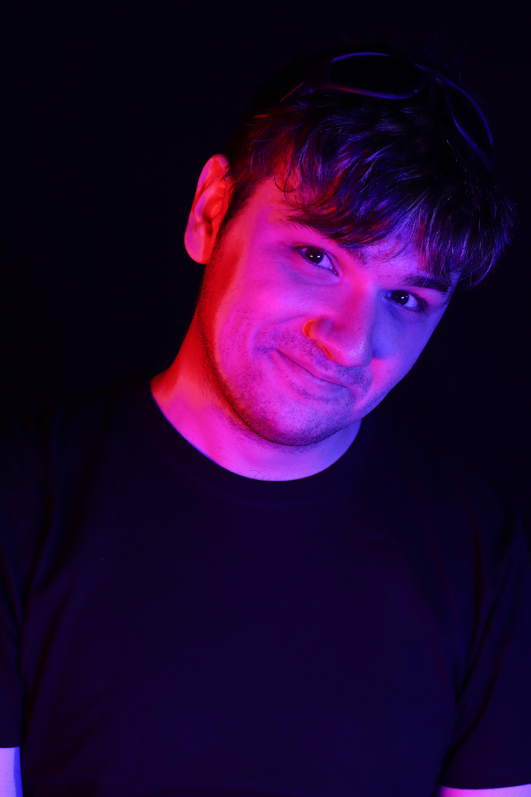
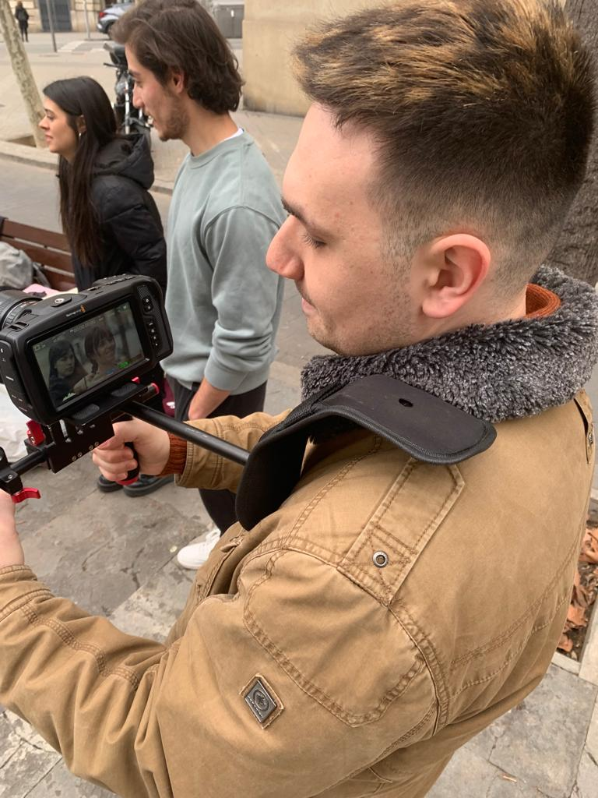
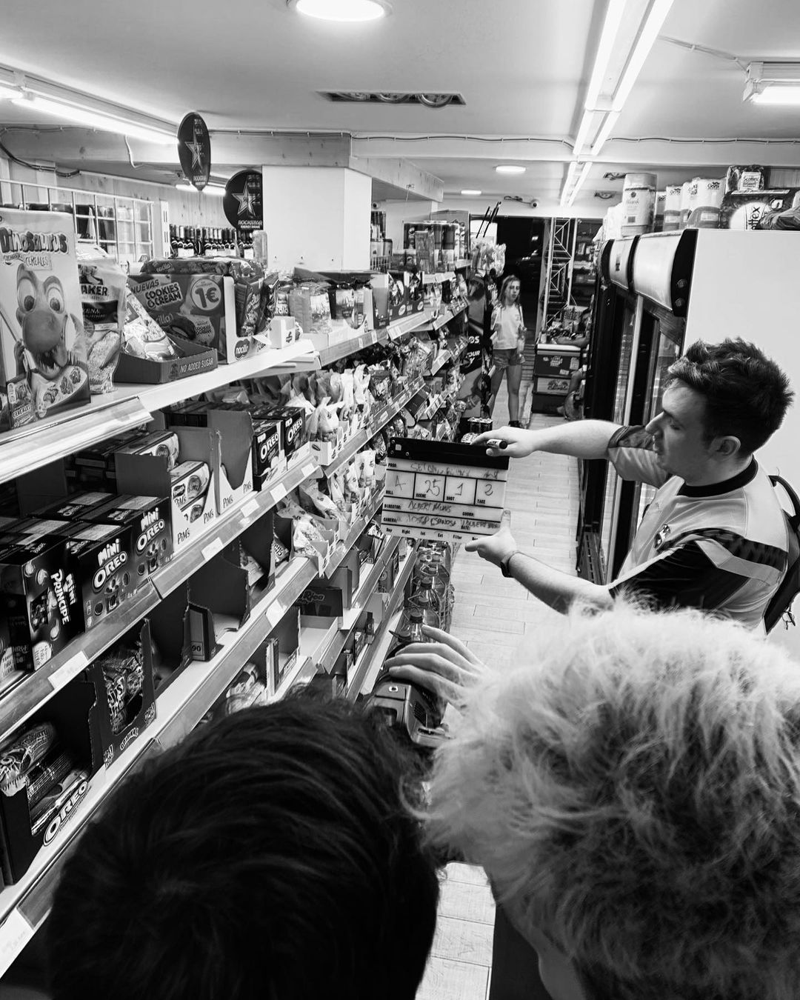

Mi historia
Nací en la ciudad castellana de Medina del Campo, un 7 de abril de 1998.
Desde
muy pequeño me gustaba utilizar el ordenador para mis proyectos audiovisuales, como un
hobbie en el que pasar el tiempo. Realizaba vídeos muy caseros para Youtube con
Movie Maker o Camtasia Studio
sobre cosas que me apasionaban, como los animales o
el ciclismo.
Me gradué en un bachillerato tecnológico en el IES Emperador
Carlos de mi ciudad, con aspiraciones a un Grado en Ingenieria Informática en la
Universidad de Valladolid. Sin embargo, en el primer año de carrera me dí cuenta que la
programación no era mi pasión, ya que soy una persona muy creativa y estaba rodeado de
monotonía.



{kind=link}
{kind=link}
{kind=link}

MÁSTER DE MONTAJE
ESCAC Escola Superior de Cinema i Audiovisuals de Catalunya (ACTUALIDAD)
Decidí aparcar mi lado más académico por mi sueño: el cine - y sobre todo, el de contar
historias. Aterricé en Barcelona, donde he realizado el Máster de Montaje
de ESCAC. Tengo conocimientos de Avid Media Pro, DaVinci Resolve y
Adobe Premiere.
El montaje para mí, es el lado más creativo del cine por sus
infinitas posibilidades. Gracias a mis años en informática y en la investigación, tengo
una línea de trabajo muy esquematizada y organizada dentro del montaje.
Por ello, soy capaz de discernir los mecanismos necesarios para que la pieza
audiovisual cumpla una serie de objetivos y funcione a través de mi trabajo. Además, me considero una persona muy meticulosa y ordenada con el material audiovisual que dispongo.
MÁSTER DE INVESTIGACIÓN EN LA COMUNICACIÓN COMO AGENTE HISTÓRICO SOCIAL
UNIVERSIDAD DE VALLADOLID - (PREMIO EXCELENCIA CURSO 2021-2023)
En este máster me formé para la investigación en el mundo de la comunicación y los medios
audiovisuales. Adquirí conocimientos de bases de datos, herramientas metodológicas y
análisis de contenido.
Realicé varios artículos sobre comunicación en
películas, series de ficción y redes sociales. Una importante línea de mi trabajo fue
dedicada a los discursos de odio actuales.
GRADO EN COMUNICACIÓN AUDIOVISUAL
UNIVERSIDAD DE BURGOS - (PREMIO EXCELENCIA CURSO 2017-2021)
Antes de todo lo anterior, aterricé en Burgos, para estudiar aquello que me permitiera
potenciar mi creatividad en un principio.
En este grado conseguí los conocimientos base para
el mundo audiovisual tanto desde un punto de vista práctico como teórico. Aprendí el uso
de herramientas como Adobe Premiere, Adobe After Effects o Blender.
También
desarrollé un espíritu mucho más investigativo y teórico gracias a la semiótica y el
análisis narrativo.